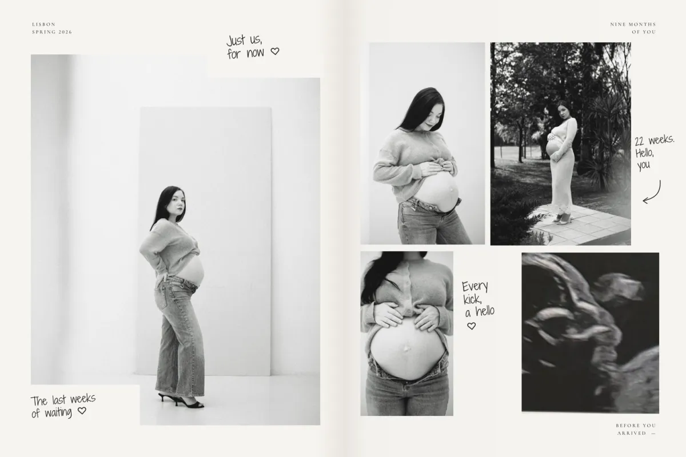

Photo Books
Monthly Baby Photo Book: Every Month of Year One
Updated Nov 2026 · by
Olga, designer at ReMeet, 10 years in editorial design
Share your baby's first year of photos. I'll organize them month by month, pick the best shots from each stage, and design a book. The milestone card shots, the everyday chaos, the 3 AM cuddles. First draft in 72 hours. From $29 for the design. Print from $69. Extra copies for grandparents $69 each.
What to capture each month
Most parents already take the monthly milestone photo. The baby on the same chair, with a number card or stuffed animal for scale. Those photos are great. But the best baby books include more than the posed shots.

| Month | Milestone card shot | What else to capture |
|---|
| Month 1 | Newborn on blanket | Hospital bracelet, first bath, sleeping on dad's chest |
| Month 2-3 | First smiles | Tummy time struggles, siblings meeting baby, the nursery setup |
| Month 4-5 | Reaching and grabbing | First foods reactions, laughing fits, rolling attempts |
| Month 6-7 | Sitting up | Messy highchair meals, first teeth, the babble conversations |
| Month 8-9 | Crawling | Pulling up on furniture, exploring the house, peek-a-boo |
| Month 10-11 | Standing, cruising | Pointing at everything, waving bye-bye, first shoes |
| Month 12 | First birthday | Cake smash, walking attempts, the party |
Don't worry about staging perfect shots. The blurry action photos, the mid-sneeze faces, the shots where the dog photobombed. Those are the pages people turn to again and again.
How many photos you need
For a first year book, most parents have hundreds or thousands of photos. That's perfect. Send them all and I'll pick the best ones.
- 30-page book: I select about 50-80 photos total, roughly 4-7 per month. This gives you a highlight reel of the year.
- 100-page book: I select 150-250 photos, roughly 12-20 per month. Every month gets its own chapter with room for the small moments.
If you've been organized and taken 20-30 photos per month, a 30-page book works beautifully. If you've got 500+ photos (and who doesn't with a new baby), 100 pages lets the story unfold at a natural pace. See the full photo count guide.
Month-by-month layout
The structure of a monthly baby book is simple. Each month gets its own section. The milestone photo opens the section. The everyday photos fill it in.

Here's how I typically lay it out:
- Title page with the baby's name, birth date, and a favorite newborn photo
- Month 1 opener with the milestone shot and birth details
- Month 1 spreads with the hospital, first days home, meeting family
- Months 2-11 each following the same pattern: milestone opener + everyday moments
- Month 12 / Birthday as the finale, often with more pages for the party
- A closing page with a letter, a favorite quote, or a comparison photo (day 1 vs day 365)
If you've written letters to your baby or kept notes about their milestones, include those. I'll place handwritten notes next to the matching photos. A scanned note saying "you said 'mama' for the first time today" is worth more than any posed photo. See tips on captions.
Beyond year one
The first year book is usually the beginning. Many parents continue with a book per year through childhood. The structure shifts from monthly to seasonal or event-based as the milestones spread out.
Some options for year two and beyond:
Your second book and every one after gets 10% off the design fee. I keep the design style on file so the books match on a shelf.
Pricing
| What you get | Price |
|---|
| Designed PDF, up to 30 pages | $29 |
| Designed PDF, up to 100 pages | $79 |
| Printed hardcover | From $69 |
| Premium layflat | From $129 |
| Extra copies (grandparents, godparents) | $69 each |
| Shipping (US and Canada) | Included |
| Shipping (Europe) | +$15 |
A common order: 100-page book ($79 design) + 3 printed copies for parents and two sets of grandparents ($69 x 3 = $207). Total: $286. That covers the design, three hardcover books, and shipping. Compare that to spending a weekend in Shutterfly's editor and still not being happy with the layout.
Frequently asked questions
How many photos do I need per month?
About 15 to 30 per month for a 30-page book, or 30 to 50 per month for a 100-page book. Send more and I'll pick the best. The milestone card shot plus everyday moments is a good mix.
Should I wait until the baby turns one to order?
Yes, most parents do. Wait until month 12 so the full year is in one book. Some parents start the book at birth and end at the first birthday party. Either way, the book tells the story of that incredible first year.
Can I include handwritten notes or letters?
Yes. Scan or photograph handwritten letters to your baby, milestone cards, or notes from grandparents. I place them in the book next to the matching month's photos. These are often the most treasured pages in the whole book.
What if my photos are mostly from my phone and not professional?
Phone photos are perfect. Most baby books I design are 100% phone photos. The candid shots of bath time, messy faces, and sleepy cuddles are exactly what makes a baby book meaningful. Professional photos are nice additions but not required.
Can I order copies for grandparents?
Yes. Extra printed copies are $69 each. Many parents order two or three so each set of grandparents gets their own copy. US and Canada shipping is included. Europe is +$15. See more on photo books for grandparents.